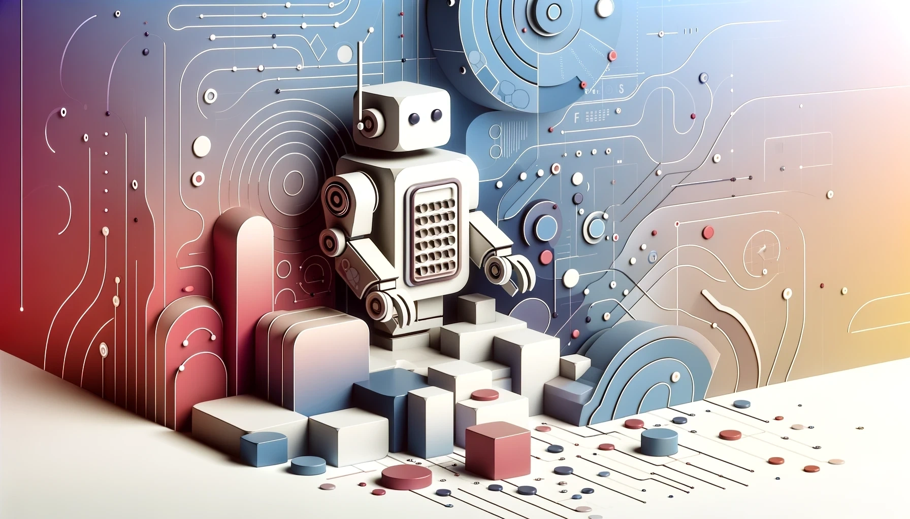

A research program
AI systems trained to replicate human decision‑making and social behavior — as instruments for studying people, as substrates for machine behavior, and as tools for large‑scale social simulation.

Recent advances in machine learning have made it increasingly possible to train models that imitate how humans actually decide, communicate, and act. We call these behavioral clones: systems built to reproduce observed human behavior, sometimes at the level of individuals, sometimes at the level of populations.
Behavioral clones sit at an unusual intersection. They are instruments for psychology and the social sciences — tools that let researchers stress‑test theories, simulate experiments, or extrapolate from sparse data. They are foundations for machine behavior — components inside larger AI systems that need to act in human-like ways. And they are methodological challenges — because the closer a model gets to reproducing behavior, the harder it becomes to evaluate when its similarity is genuine and when it is misleading.
This site is a place to gather around those questions. It collects events, work, and (soon) a newsletter, with the aim of building a community of researchers and practitioners who take behavioral clones seriously as a scientific object — not just as a tool.
Behavioral Clones Workshop 2026
A one‑day workshop at the Max Planck Institute for Human Development, alongside the Machine+Behavior conference. Three invited keynotes, contributed talks, lightning talks, posters, and a panel.
More to come.
Levin Brinkmann
Center for Humans and Machines
Max Planck Institute for Human Development
Dirk U. Wulff
Center for Adaptive Rationality
Max Planck Institute for Human Development